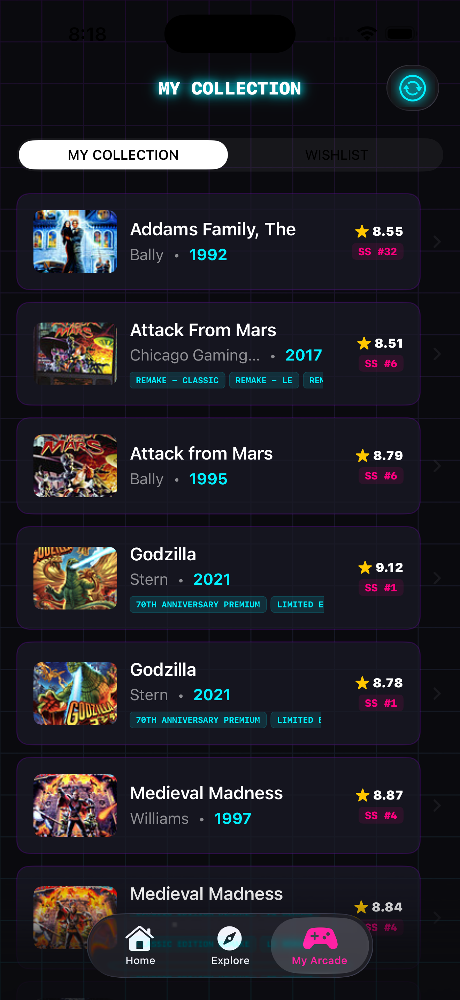
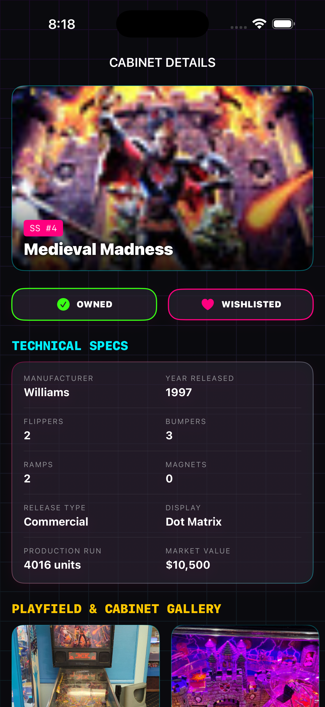

Discover
Featured cabinets, arcade roulette, trivia, and top-ranked machines on Home.
PinFan is your neon companion for the silverball life — discover thousands of pinball machines, track what you own and wish for, log high scores, and keep the catalog in your pocket even offline.
Home, Explore, and My Arcade — everything you need to hunt cabinets, grow your floor, and chase that next high score.
Featured cabinets, arcade roulette, trivia, and top-ranked machines on Home.
Search and browse thousands of cabinets with ratings, makers, years, and types.
Own it, wish for it, jot notes, and log scores in My Arcade.
The full catalog travels with you — browse the floor with zero signal.
Real screens from PinFan — Home, Explore Cabinets, My Arcade, and Cabinet Details.
Land on PIN-FAN and jump straight into what’s hot tonight — a featured cabinet, arcade roulette, trivia bites, your cabinets, and top-ranked machines.
Browse and search a deep pinball catalog — from classics to modern remakes. Filter by type, dig into ratings, and find the next machine worth chasing.
Build your personal floor. Mark machines you own, save what you’re hunting, keep notes, and log high scores — your arcade, your rules.

Open any machine for the full story — artwork, technical specs, production info, market value, and a playfield & cabinet gallery. One tap to mark Owned or Wishlisted.

Take the floor anywhere. PinFan keeps a rich offline catalog on your phone so you can browse makers, years, ratings, and specs even when you’re deep in the arcade.
Ratings · makers · years · specs
PinFan is almost ready to drop. Follow along for release news — download links will appear here when the app goes live.
PinFan is built for personal collection tracking. A full privacy policy will ship with the App Store release.
Questions or feedback? Open an issue on GitHub or check back here after launch for contact options.